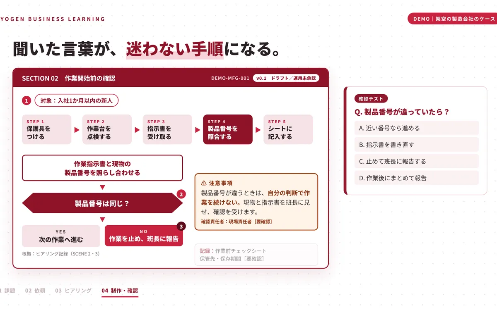

THE 노도지만 (노래자랑 대회)
사업과 사회에서의 실천이벤트실시 완료

서일본 최대급 노래방 콘테스트. 4년에 걸쳐 개최.
Record기록 상세
2016년부터 2019년까지 4년에 걸쳐 연, 서일본 최대급 노래방 콘테스트입니다.
2019년 여름 대회 'THEのどじまん 超!!!'는 8월 24일(토) 구로사키 히비신 홀에서 열었습니다. 참가 가능 연령은 3세부터 118세까지, 모집 인원은 60명.
1회전부터 결승까지 토너먼트로, 이길 때마다 상금이 나옵니다. 승패는 출연자와 관객의 투표로 정했습니다. 우승 상으로 FM 라디오 'FM kitaQ 水曜ゴールデン' 게스트 출연, 상금과 상장, 프로 레코딩 체험 등을 준비했습니다.
| 담당 | 기획, 출연 교섭, 구성, 당일 운영 |
|---|
- 상태
- 실시 완료
- 날짜
- 2016〜2019년
Related관련 전시
-
체험 가능

-
기록

-
기록—'가이운카이소쿠(開運開足)' 프로듀스상품 (기록, 이미지 없음)
이런 표현을 함께 만들고 싶은 분께
아직, 제대로 말하지 못해도 괜찮습니다. 상담하기